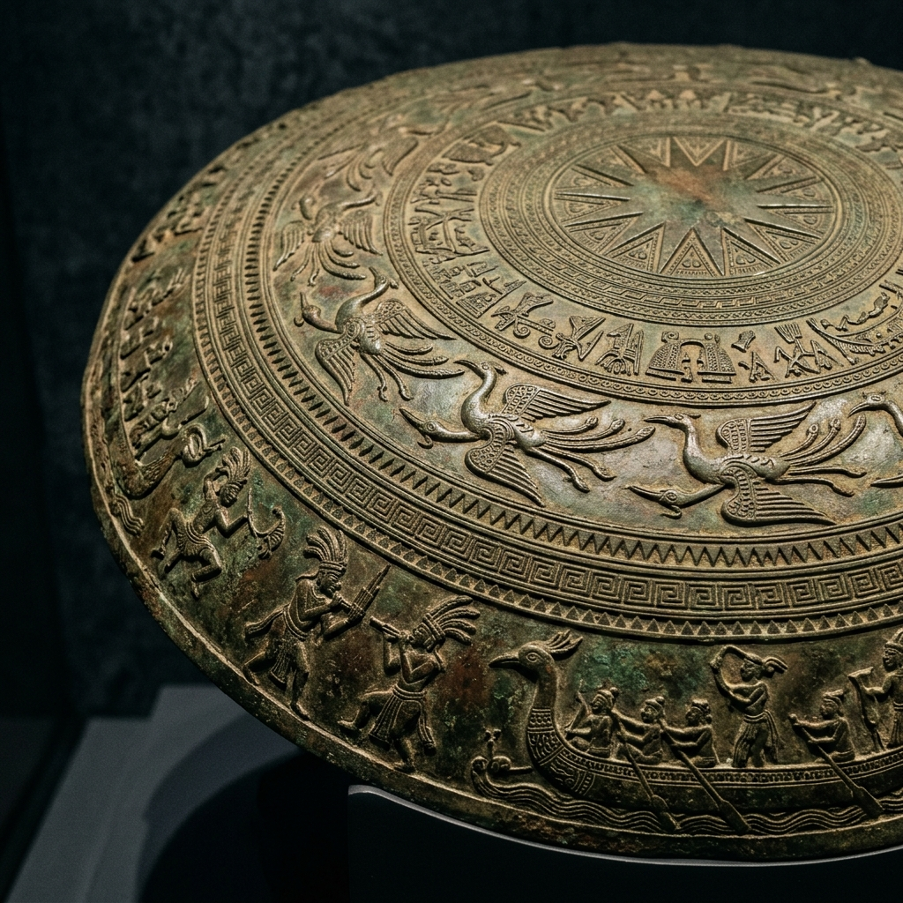
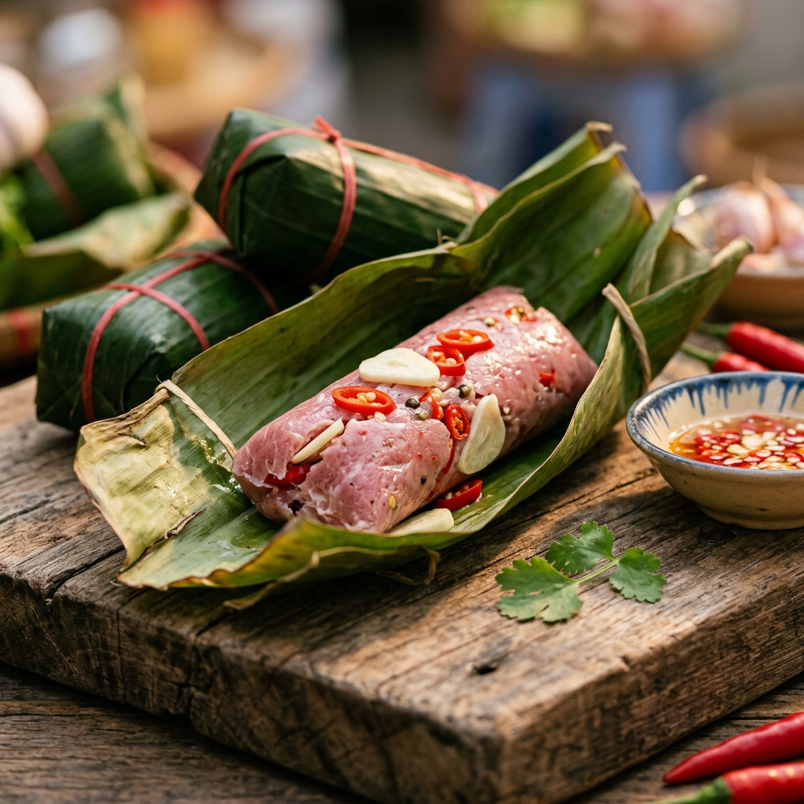
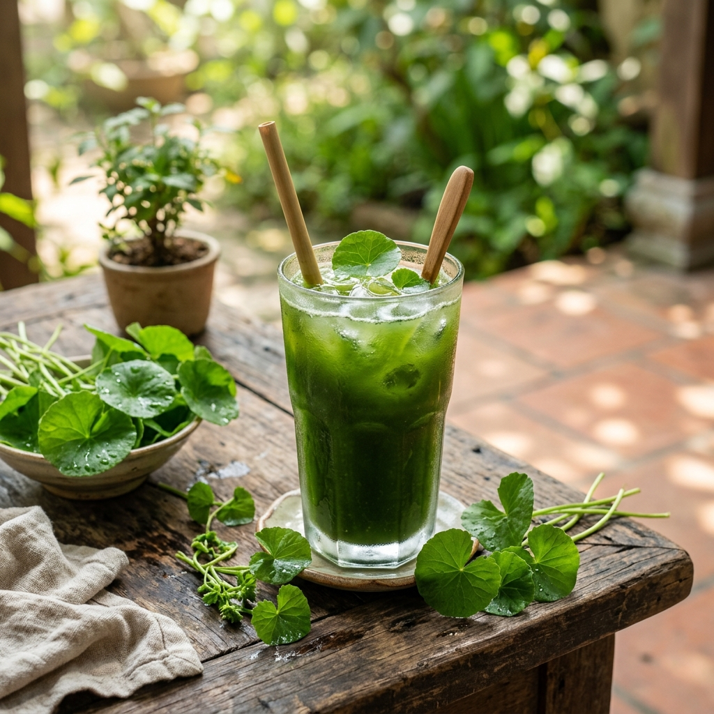

Khám phá vẻ đẹp bất tận của xứ Thanh - Nơi giao thoa giữa lịch sử ngàn năm và thiên nhiên kỳ vĩ.
Bắt Đầu Hành TrìnhThanh Hóa, mảnh đất phên dậu của Tổ quốc, nơi hội tụ đầy đủ các vùng sinh thái: núi rừng, trung du, đồng bằng và ven biển. Đây không chỉ là bức tranh thiên nhiên tuyệt mỹ mà còn là chiếc nôi của những trang sử hào hùng.
Từ nền văn hóa Đông Sơn rực rỡ đến những di sản thế giới được UNESCO công nhận, Thanh Hóa luôn tự hào mang trong mình dòng chảy mạnh mẽ của "Hào Khí Đất Việt".

Văn hóa Đông Sơn là một trong những nền văn minh rực rỡ nhất thời kỳ cổ đại ở Việt Nam, với trung tâm là lưu vực sông Mã (Thanh Hóa). Chiếc Trống đồng không chỉ là nhạc khí mà còn là biểu tượng quyền uy, thể hiện kỹ thuật đúc đồng tinh xảo và đời sống tinh thần phong phú của người Việt cổ.
Bên cạnh đó, Thanh Hóa còn tự hào với Thành nhà Hồ - Di sản văn hóa thế giới, một kiệt tác kiến trúc bằng đá độc nhất vô nhị tại Đông Nam Á.
Tìm hiểu thêmBãi biển trải dài, cát mịn và sóng vỗ rì rào, Sầm Sơn từ lâu đã là điểm đến nghỉ dưỡng yêu thích bậc nhất miền Bắc vào mỗi dịp hè.
Được ví như "Sapa thu nhỏ", Pù Luông hút hồn du khách bởi những thửa ruộng bậc thang vàng óng và những bản làng mộc mạc ẩn mình trong sương.
Nhắc đến Thanh Hóa là nhắc đến Nem Chua - món quà vặt làm nức lòng biết bao thực khách. Sự kết hợp hoàn hảo giữa vị chua nhẹ của thịt lên men, vị cay của ớt, thơm của tỏi và chát của lá đinh lăng tạo nên một hương vị khó quên.


"Dân Thanh Hóa, ăn rau má, phá đường tàu" - câu nói quen thuộc không chỉ gắn liền với một thời kỳ lịch sử gian khổ mà còn nhắc nhở về thức uống dân dã, thanh mát. Nước rau má nay đã trở thành đặc sản giải nhiệt ngày hè, mang đậm tình người xứ Thanh.